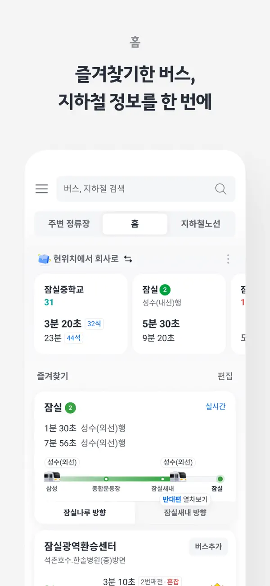
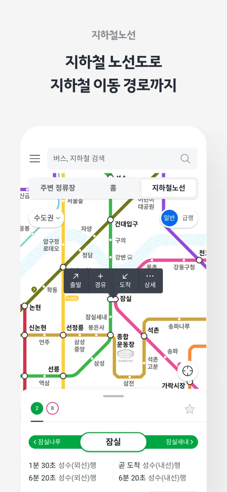
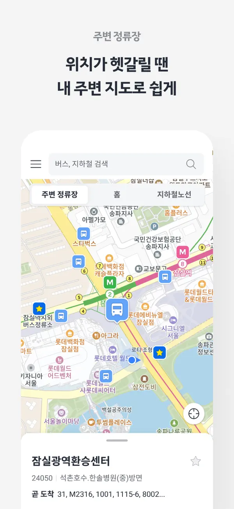

01 Scale
Redesigning services
millions already rely on.
KakaoBus 5.0
Kakao Mobility · South Korea
A public transport information service used by three million people, powered by bus location data from local authorities across South Korea.


